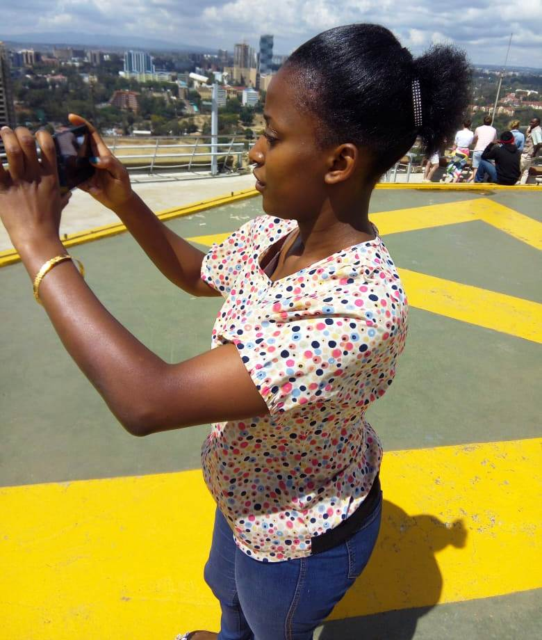

My name is Beatrice Kasembi.I am 23 years old. In a family of 3, i am the second born. My Mum's name is Alice Wanja, and my dad's name is Stephen Munywoki. My two brother's names are James Mutua and Michael Wachira. I went to St Dominic Primary School, and later on joined Ngaru Girls Secondary School to pursue my KCSE. Later on i graduated and joined Deliverance Computer College to pursue my Computer Packages Certificate. I am passionate about dancing, movivational talks and reading as well. Discovering new things and learning is also my concern. It has been a great journey since i cleared my Compputer Packages in 2015. I have worked in various sectors including Real estate, retail, technology and also micro finance. This is my journey.I OWN IT! I LOVE IT!
images